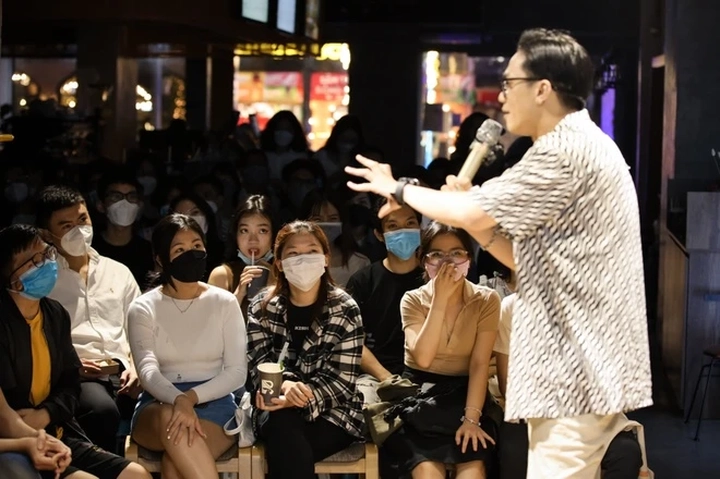

Hài Độc Thoại ở Việt Nam
Hài độc thoại là một hình thức biểu diễn sân khấu khá mới mẻ với nhiều người tại Việt Nam. Nơi người nghệ sĩ chỉ có mình họ trên sân khấu, cùng chiếc micro và hàng trăm ánh mắt đang chờ một tràng cười. Không bối cảnh, không đạo cụ, không bạn diễn – chỉ có ngôn từ, nhịp điệu và góc nhìn sắc sảo về cuộc sống.
Tuy đã xuất hiện ở Việt Nam cách đây khoảng đâu đó khoảng 15 năm, nhưng chỉ vài năm trở lại đây, Hài Độc Thoại mới thật sự phát triển mạnh mẽ và hình thành một cộng đồng riêng. Những gương mặt sáng tạo và cá tính nổi bật có thể kể đến như các bạn trẻ trong như SaiGon Tếu, Nghiện Joke ... đã và đang góp phần thổi làn gió mới cho bộ môn nghệ thuật này.
Hôm nay hãy cùng TrithucWorld tìm hiểu hơn về Hài Độc thoại tại Việt Nam nhé!
1. Lịch sử của Hài Độc Thoại.
Hài độc thoại lần đầu tiên được biết đến từ cuối thế kỷ 19, bắt nguồn ở Anh và Mỹ – nơi các nghệ sĩ đứng trên sân khấu kể chuyện pha trò, châm biếm xã hội và đời sống thường nhật. Tuy nhiên, phải đến giữa thế kỷ 20, thể loại này mới thật sự bùng nổ khi được đưa lên truyền hình với những tên tuổi như Bob Hope hay Jack Benny, trở thành một phần không thể thiếu của văn hóa đại chúng phương Tây.
Đến thập niên 1960–1970, hài độc thoại bước sang một trang mới – trở thành nghệ thuật phản biện xã hội – nhờ những nghệ sĩ táo bạo như Lenny Bruce và George Carlin, những người dùng tiếng cười để nói về chính trị, phân biệt chủng tộc và tự do ngôn luận.
Sang thế kỷ 21, cùng với sự phát triển của Netflix, HBO và YouTube, hài độc thoại đã vươn mình trở thành một ngành công nghiệp giải trí toàn cầu, nơi tiếng cười gắn liền với tư duy và sự phản chiếu đời sống. Nhiều tên tuổi nổi bật đã góp phần định hình phong cách đương đại như Robin Williams, Kevin Hart, Dave Chappelle, Chris Rock hay Bill Burr...

Tại Việt Nam, hài độc thoại xuất hiện muộn hơn rất nhiều. Khoảng giai đoạn 2011–2013, khán giả lần đầu biết đến thể loại này qua gương mặt quen thuộc Dưa Leo, người đã mang tiết mục hài độc thoại lên sân khấu Vietnam’s Got Talent. Dù phải dừng chân sớm, anh đã góp phần mở đường cho một thể loại hoàn toàn mới mẻ với khán giả trong nước.
Sau chương trình, Dưa Leo tiếp tục kiên trì theo đuổi con đường này qua các buổi biểu diễn nhỏ, video YouTube và những sân khấu độc lập. Anh không chỉ mang đến tiếng cười mà còn dùng hài để phản ánh các vấn đề xã hội, giáo dục và văn hóa ứng xử, giúp công chúng nhận ra rằng hài độc thoại không chỉ là kể chuyện vui – mà là một hình thức thể hiện tư duy và quan điểm sống đầy cá tính.
Ở hải ngoại, chương trình Paris By Night của Thúy Nga cũng từng giới thiệu đến khán giả những tiểu phẩm mang dáng dấp hài độc thoại, qua phần trình bày của nghệ sĩ Nguyễn Ngọc Ngạn (đôi khi đối thoại cùng Kỳ Duyên). Dù khi đó khái niệm “hài độc thoại” chưa thực sự phổ biến, những màn biểu diễn ấy vẫn mang tinh thần của thể loại này – hài hước, châm biếm và đầy tính kể chuyện.
Một cái tên khác cũng có thể xem là người tiên phong trong việc định hình phong cách hài độc thoại hiện đại tại Việt Nam là Phong Lê cùng nhóm bạn của anh. Do chịu ảnh hưởng mạnh từ văn hóa phương Tây, hài của họ mang phong cách thẳng thắn, trần trụi và đôi khi gây tranh cãi. Dù không tránh khỏi những chỉ trích vì “không hợp văn hóa Việt”, nhưng không thể phủ nhận rằng Phong Lê đã góp phần tạo nên cộng đồng hài độc thoại trẻ trung, tự do và đa sắc thái hơn.
2. Đặc trưng của hài độc thoại – Tiếng cười đến từ sự thật
Khác với những tiểu phẩm hài quen thuộc trên truyền hình, hài độc thoại (stand-up comedy) không cần đạo cụ, không cần sân khấu hoành tráng, thậm chí cũng chẳng cần kịch bản phức tạp. Chỉ có một người, một micro, và một góc nhìn riêng. Chính sự tối giản ấy lại làm nên sức hấp dẫn đặc biệt của thể loại này – nơi toàn bộ trọng tâm nằm ở ngôn từ, cá tính và sự quan sát đời sống của nghệ sĩ.
Cốt lõi của hài độc thoại là sự thật được phóng đại bằng trí tuệ và cảm xúc. Nghệ sĩ không sáng tạo ra câu chuyện từ hư cấu, mà lấy chất liệu trực tiếp từ chính đời sống: một buổi sáng tắc đường, một lần cãi nhau với người yêu, một thói quen kỳ lạ của người Việt… Từ những điều ai cũng từng trải qua, họ biến nó thành tiếng cười bằng cách nhìn khác – đôi khi mỉa mai, đôi khi tự trào, đôi khi đầy thấu hiểu. Chính vì thế, hài độc thoại chạm đến khán giả không chỉ bằng sự vui nhộn, mà bằng sự đồng cảm.
Điểm đặc biệt khác của hài độc thoại là ngôn ngữ và nhịp điệu. Mỗi nghệ sĩ có cách “tung hứng” riêng, sử dụng ngắt nhịp, ánh mắt cử chỉ hay sự im lặng có chủ đích để dẫn dắt cảm xúc khán giả. Đôi khi tiếng cười đến từ cách chơi chữ dí dỏm hoặc những plot twist không ngờ tới trong câu chuyện, hoặc thậm chí đôi khi nó chẳng cần đến từ ngôn từ mà đến từ chính body language của người kể chuyển.
Đối với hài độc thoại, có vô vàn cách tạo mảng miếng để lấy tiếng cười của khán giả. Không có tiếng cười nào ngẫu nhiên – mọi từ ngữ, nhịp nói và khoảng dừng đều được tính toán tỉ mỉ để đạt hiệu quả cao nhất. Bởi vậy, stand-up không chỉ là “kể chuyện cho vui”, mà là một nghệ thuật ngôn từ và tiết tấu sân khấu.
Ở Việt Nam, khi khán giả vẫn quen với tiểu phẩm có tình huống, nhiều nhân vật và tiếng cười “diễn”, hài độc thoại trở thành một trải nghiệm hoàn toàn mới – nơi tiếng cười xuất phát từ sự thật, chứ không phải dàn dựng. Nó đòi hỏi người diễn phải thành thật, thông minh và đủ tinh tế để kể những chuyện rất riêng mà ai nghe cũng thấy mình trong đó.
Hài độc thoại, vì thế, không phải là nơi trốn chạy khỏi thực tế – mà là tấm gương phản chiếu thực tế qua lăng kính hài hước, giúp ta cười với chính những điều khiến ta mệt mỏi, và đôi khi, hiểu đời thêm một chút.
3. Hài độc thoại ở Việt Nam tại thời điểm hiện tại
Sau hơn một thập kỷ kể từ khi khái niệm “hài độc thoại” được nhắc đến lần đầu, thể loại này ở Việt Nam vẫn đang trong giai đoạn định hình. Nó chưa trở thành một dòng chảy lớn, nhưng đã có một cộng đồng nhỏ những người yêu thích và thực hành – từ các nghệ sĩ độc lập cho tới các bạn trẻ tập tành cầm micro trên những sân khấu mở (open mic).
Trên YouTube và các nền tảng mạng xã hội, ta có thể bắt gặp những buổi diễn nhỏ, được ghi hình giản dị nhưng chứa đựng tinh thần rất “độc thoại”: người nghệ sĩ đứng một mình, nói về chính mình, và tìm tiếng cười trong những điều thường ngày. Một số nhóm như Saigon Tếu, Weirdos Comedy, Nghiện Joke hay Hanoi Comedy Collective đang góp phần tạo nên một không gian mới – nơi các buổi biểu diễn được tổ chức thường xuyên, thu hút khán giả trẻ, cởi mở và sẵn sàng đón nhận những góc nhìn khác biệt.
Một số gương mặt tiêu biểu trong cộng đồng hài độc thoại hiện nay có thể kể đến như Phương Nam, Nhi Võ, Uy Lê… Họ là những người trẻ mang phong cách kể chuyện thông minh, linh hoạt, biết cách biến trải nghiệm cá nhân thành chất liệu hài hước và gần gũi. Dù vẫn còn ở giai đoạn đầu của hành trình, nhưng những cái tên này đã góp phần quan trọng trong việc định hình phong cách hài độc thoại Việt Nam hiện đại – nơi tiếng cười đi cùng với sự quan sát và phản tư xã hội.
Hiện nay, các show hài độc thoại được tổ chức thường xuyên hơn, thu hút lượng khán giả ổn định, đặc biệt là giới trẻ ở cả miền Nam và miền Bắc. Những buổi diễn của các nhóm như Saigon Tếu hay Weirdo Comedy thường kín chỗ, tạo nên một không khí cởi mở, sôi động và gần gũi. Trên mạng xã hội, nhiều video hài độc thoại cũng dễ dàng trở nên viral nhờ giá trị giải trí, tính châm biếm và sự thật đời thường mà nó chạm đến.
Tuy vậy, phải thừa nhận rằng cộng đồng khán giả hài độc thoại ở Việt Nam vẫn còn khá non trẻ. Đây là bộ môn nghệ thuật đòi hỏi khả năng lắng nghe, sự tinh tế trong cảm nhận và đôi khi là tư duy phản biện – những yếu tố còn mới mẻ với phần đông công chúng. Vì thế, các show diễn hiện nay chủ yếu tập trung ở TP. Hồ Chí Minh và Hà Nội, hai thành phố lớn của Việt Nam.
Điểm đáng chú ý là, hài độc thoại ở Việt Nam hiện nay không chỉ dừng ở sự bắt chước phương Tây, mà đã bắt đầu tìm ra bản sắc riêng. Nghệ sĩ Việt nói bằng ngôn ngữ Việt, về chuyện Việt – từ chuyện tắc đường, giá xăng, tới những câu chuyện gia đình, công sở, mạng xã hội. Tiếng cười có phần mộc mạc, nhưng thật và gần gũi.
Tuy nhiên, hài độc thoại vẫn đang đối mặt với nhiều giới hạn – đặc biệt là rào cản văn hóa và kiểm duyệt. Việc nói thẳng, nói thật về các vấn đề xã hội vẫn là thử thách lớn, buộc nghệ sĩ phải khéo léo tìm cách “đi dây” giữa sự trung thực và an toàn. Nhưng chính trong không gian nhỏ bé đó, hài độc thoại Việt Nam đang dần trưởng thành: ít ồn ào hơn, nhưng nhiều suy ngẫm hơn.
Có thể nói, hiện tại là giai đoạn “ươm mầm” của hài độc thoại Việt Nam. Nó chưa phổ biến, nhưng đang lớn dần lên từ những người tin rằng tiếng cười có thể là một cách để đối thoại với đời sống. Và biết đâu, vài năm nữa, những sân khấu nhỏ hôm nay sẽ trở thành điểm khởi đầu cho một nền hài độc thoại mang đậm dấu ấn Việt.